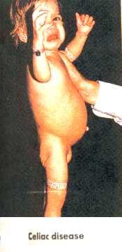

POLYCLONAL STIMULATION OF AUTOREACTIVE EFFECTORS

The activators of B-cells, non-specific towards a given autoantigen, may provoke the simultaneous reaction of several or many B-clones, including autoreactive ones, with bypass of autoreactive T-helpers. In these situations different autoreactive clones may produce significant amounts of various autoantibodies. Commonly it is accompanied by increase in cytokine production, so the mechanism of MHC class II glycoproteins aberrant expression can be plugged in secondarily and cause “autopresentation” of the self-antigens. Several microorganisms and their products are capable of causing polyclonal (i.e., antigen nonspecific) activation of B cells. The best investigated among these is bacterial lipopolysaccharide (endotoxin), which can induce mouse lymphocytes to form anti-DNA, antithymocyte, and anti-red cell antibodies in vitro. Among the provocateurs of autoallergy, acting via this mechanism, are Epstein-Barr virus (and that results in some autoimmune symptoms of infectious mononucleosis) and plantar lectins (e.g. avenin related to anti-bowel mucosa autoimmunity in some forms of celiakia).
Polyclonal autoallergy is characteristic also of superantigenic effect (see above: superantigens). It has been demonstrated that up to 20 % of all existing natural B-clones (CD5-positive ones) are able to produce autoreactive Ig M of low affinity (natural autoantibodies). This Ig recognize some widely common self epitopes, close to widely spread exogenous antigens (those of DNA, thyreoglobulin, hormones and their receptors, Fc-fragments etc). As germ cell line genes Vn3-n5 encode these auto-Igs, their existance may represent some rudimentary ancient less selective mechanisms of primary immune response (R. Schwartz, 1986). The polyclonal exaggeration of such autoreactive B-cells activity may be responsible for many cases of autoallergy. Some symptoms of lymphoid leukemias, for example, anemia and thrombocytopenia, may be partially caused by exagerration of autoreactive lymphoid clones.
NEXT CHAPTER
OR